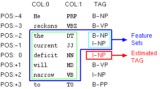
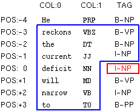
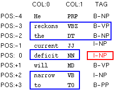
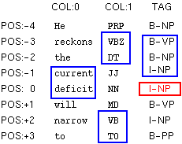

Both the training file and the test file need to be in a particular format for the YamCha to work properly. Generally speaking, training and test file must consist of multiple tokens. In addition, a token consists of multiple (but fixed-numbers) columns. The definition of tokens depends on the task, however, in the most of typical cases, they simply correspond to the words. Each token must be represented in one line, with the columns separated by white space (spaces or tabular characters). The sequence of token becomes a sentence. To identify the boundary between sentences, just put an empty line (or just put 'EOS').
You can give as many columns as you like, however the number of columns must be fixed through all tokens. Furthermore, there are some kinds of "semantics" among the columns. For example, 1st column is 'word', second column is 'POS tag' third column is 'sub-category of POS' and so on.
The last column represents a true answer tag which is going to be trained by SVMs.
Here's an example of such a file: (data for CoNLL shared task)
He PRP B-NP reckons VBZ B-VP the DT B-NP current JJ I-NP account NN I-NP deficit NN I-NP will MD B-VP narrow VB I-VP to TO B-PP only RB B-NP # # I-NP 1.8 CD I-NP billion CD I-NP in IN B-PP September NNP B-NP . . O He PRP B-NP reckons VBZ B-VP ..
There are 3 columns for each token.
- The word itself (e.g. reckons);
- part-of-speech associated with the word (e.g. VBZ);
- Chunk(Answer) tag represented in IOB2 format;
The following data is invalid, since the number of columns of second and third are 2. (They have no POS column.) The number of columns should be fixed.
He PRP B-NP reckons B-VP the B-NP current JJ I-NP account NN I-NP ..
Here is an example of English POS-tagging.
There are total 12 columns; 1: word, 2: contains
number(Y/N), 3: capitalized(Y/N), 4:contains symbol
(Y/N)
5..8 (prefixes from 1 to 4) 9..12 (suffixes from 1 to
4).
If there is no entry in a column, dummy field ("__nil__")
is assigned.
Rockwell N Y N R Ro Roc Rock l ll ell well NNP International N Y N I In Int Inte l al nal onal NNP Corp. N Y N C Co Cor Corp . p. rp. orp. NNP 's N N N ' 's __nil__ __nil__ s 's __nil__ __nil__ POS Tulsa N Y N T Tu Tul Tuls a sa lsa ulsa NNP unit N N N u un uni unit t it nit unit NN said N N N s sa sai said d id aid said VBD ..
The first step in using the YamCha is to create training and test files. Here, I take the Base NP Chunking task as a case study.
Assume a data set like this. First column represents a word. Second column represents a POS tag associated with the word. Third column is true answer tag associated with the word (I,O or B). The chunks are represented using IOB2 model. The sentences are presumed to be separated by one blank line.
First of all, run yamcha-config with --libexecdir option. The location of Makefile which is used for training is output. Please copy the Makefile to the local working directory.
% yamcha-config --libexecdir /usr/local/libexec/yamcha % cp /usr/local/libexec/yamcha/Makefile .
There are two mandatory parameters for training.
- CORPUS: The location of file which is written in the training/test format.
- MODEL: Prefix name of model file(s)
Here is an example in which CORPUS is set as 'train.data' and MODEL is set as 'case_study'.
% make CORPUS=train.data MODEL=case_study train /usr/bin/yamcha -F'F:-2..2:0.. T:-2..-1' < train.data > case_study.data perl -w /usr/local/libexec/yamcha/mkparam case_study < case_study.data perl -w /usr/local/libexec/yamcha/mksvmdata case_study .. omit
After training, the following files are generated.
% ls case_study.* case_study.log : log of training case_study.model : model file (binary, architecture dependent) case_study.txtmodel.gz : model file (text, architecture independent) case_study.se : support examples case_study.svmdata : training data for SVMs
OK, let's parse this test data using above generated model file (case_study.model). You simply use the command:
% yamcha -m case_study.model < test.data Rockwell NNP B B International NNP I I Corp. NNP I I 's POS B B Tulsa NNP I I unit NN I I said VBD O O ...
The last column is given (estimated) tag. If the 3rd column is true answer tag , you can evaluate the accuracy by simply seeing the difference between the 3rd and 4th columns.
-
Parsing Direction
DIRECTION is used to change the parsing direction. The default setting is forward parsing mode (LEFT to RIGHT). If "-B" is specified, backward parsing mode (RIGHT to LEFT) is used. Please see my paper for more detail about the parsing direction.
% make CORPUS=train.data MODEL=case_study DIRECTION="-B" train
-
Re-definition of features (changing window-size)
FEATURE is used to change the feature sets (window-size) for chunking.
The default setting is "F:-2..2:0.. T:-2..-1"."F:-2..2:0.. T:-2..-1" implies that contexts in the blue box are used as feature sets to identify the tag in the red box.

More specifically, the contexts in the blue box can be divided into two parts -- green box (static feature F:) and light-blue box (dynamic feature T:).
F: and T: should be written in the following format:F:[beginning pos. of token]..[end pos. of token]:[beginning pos. of column]..[end pos. of column] T:[beginning pos. of tag]..[end pos. of tag]
Static Features F:
In this figure, the tokens at -2, -1, 0, 1, and 2 position are used as features. (green box).
It means that [beginning positing of token] is -2 and [end position of token] is +2.
In addition, this figure shows that 0-th and 1-st columns in these tokens are taken as features.
It means that [beginning position of column] is 0 and [the end position of column] is 1.
You can omit the [end position of column]. If omitted, the last column is set as [end position of column].
Note that column for answer tag is not regarded as [end position of column].
By taking tokens as well as columns, final expression of static feature becomes "F:-2..2:0..1".
In this case, you can use "F:-2..2:0.." which means same as "F:-2..2:0..1".Dynamic Features T:
Dynamic features are decided dynamically during the tagging of chunk labels.
In this figure, the tags at -2 and -1 position are used as features. (light-blue box)
It means that [beginning positing of tag] is -2 and [end position of tag] is -1.
Note that [end potion of tag] must smaller than -1, since the right-side tags (0,+1,+2,+3...)
have not been identified yet and cannot be used as features.You can use the expression F: and T: repeatably. All duplicate entries are deleted.
Here are more complicated examples.

F:-3..3:0.. T:-3..-1
F:-2..2:1..1 F:0..0:0..1 T:-1..-1
F:-3..-2:0.. F:0..0:0.. F:2..3:0.. T:-3..-2
F:-3..-2:1..1 F:-1..0:0..0 F:2..3:1..1 T:-3..-1Here is an example of setting "F:-3..3:0.. T:-3..-1" to the FEATURE parameter.
% make CORPUS=train.data MODEL=case_study FEATURE="F:-3..3:0.. T:-3..-1" train
The expression "-2..2" can be also expressed as "-2,-1,0,-1,2". In addition, if the beginning position and end position are same, you can omit the end position. Here are some alternative expressions:
- "F:-2..2:0..0" -> "F:-2,-1,0,1,2:0"
- "F:0..0:0..1" -> "F:0:0,1"
Note that the expression of "-2,0,2" is different from "-2..2".
".." represents a range between beginning and end position. -
Call-back function to rewrite features in detail
(require C++ knowledge)
You can define some call-back function which re-writes or adds task-dependent specific features. For more detail, see example/example.cpp.
-
Multi-class methods
MULTI_CLASS is used to change the strategy for the multi-class problem. The default setting is pair wise method. If "2" is specified, 'one vs rest' is used.
% make CORPUS=train.data MULTI_CLASS=2 MODEL=case_study
-
Training conditions of SVMs
SVM_PARAM is used to change the training condition of SVMs. Default setting is "-t1 -d2 -c1", which means the 2nd degree of polynomial kernel and 1 slack variable are used. Note that YamCha only supports polynomial kernels.
Here is an example of using 3rd degree of polynomial kernel:% make CORPUS=train.data MODEL=case_study SVM_PARAM="-t1 -d3 -c1" train
Please use -m SIZE option to increase the memory for training if possible. This option drastically reduce the computational cost and time.
Here is an example of assigning 512 Mb memory to the SVMs:% make CORPUS=train.data MODEL=case_study SVM_PARAM="-t1 -d2 -c1 -m 512" train
-
Output format
The -V option sets verbose mode, where yamcha outputs tag and scores of all candidates.
The meaning of score varies with multi-class methods.- one vs rest: distance from the separating hyperplane
- pair wise: summation of distances of this class
# without -V % yamcha -m case_study.model < test.data Rockwell NNP B B International NNP I I Corp. NNP I I 's POS B B Tulsa NNP I I unit NN I I said VBD O O .. # with -V % yamcha -V -m case_study.model Rockwell NNP B B B/0.630616 I/-0.974367 O/-0.721942 International NNP I I B/-0.789851 I/0.561522 O/-0.833703 Corp. NNP I I B/-0.934675 I/0.486497 O/-0.584086 's POS B B B/0.418284 I/-0.760627 O/-0.794485 Tulsa NNP I I B/-0.987653 I/1.06272 O/-1.16405 unit NN I I B/-0.783824 I/0.845213 O/-1.04919 said VBD O O B/-1.29512 I/-1.02006 O/0.956885 ...
-
Sentence boundary marker
The -e option sets the sentence boundary marker. Default setting is empty ("").
Here is an example of changing the sentence boundary marker to "EOS"% yamcha -e EOS -m case_study.model < test.data
-
Partial Chunking
If you know in advance the candidates of answer tags by using some 'prior' knowledge, you may want to select answer only from these candidates. Here is a concrete example. If the 1st token must be B tag and the 2nd token must be select only from B and I, you give yamcha the following test data:
Rockwell NNP B International NNP B I
Generally speaking, candidates are listed instead of last column.
In the partial parsing mode, yamcha must be run with -C option.% yamcha -C -m case_study.model < test.data
Note that the interpretation of test data varies with -C option.
- With -C option: the last (or more) columns are interpreted as candidates.
- Without -C option: the last (or more) columns are ignored.
See here.